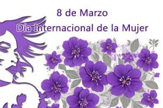

El derecho a una vida libre de violencia es el derecho que tengo como mujer a que ninguna acción u omisión basada en el género me cause daño o sufrimiento psicológico físico patrimonial económico sexual o la muerte tanto en el ámbito privado como en el público Como mujer también tengo derecho al reconocimiento goce ejercicio y protección de mis derechos humanos libre de comportamientos y prácticas sociales y culturales basadas en conceptos de inferioridad que me hagan menos En este sentido tengo derecho a que se respete mi vida; mi integridad física, psíquica y moral; mi libertad y seguridad personales a no ser sometida a torturas; a proteger a mi familia; a igualdad ante la ley y de la ley a la libertad de asociación, creencias y religión; a ejercer los derechos civiles políticos económicos sociales y culturales a estar libre de discriminación a no ser educada y valorada bajo patrones estereotipados entre otros
Las autoridades deben tomar todas las medidas apropiadas para garantizar sin discriminación alguna, la igualdad entre hombres y mujeres en el ejercicio y el goce de los derechos humanos y las libertades fundamentales en todas las esferas Asimismo deben condenar la violencia contra la mujer y aplicar todas las medidas apropiadas para eliminarla Las autoridades deberán prevenir investigar y sancionar la violencia contra las mujeres incluir en su legislación interna normas penales civiles y administrativas para prevenir sancionar y erradicar la violencia contra las mujeres adoptar medidas jurídicas para que los agresores se abstengan de hostigar intimidar amenazar dañar o poner en peligro la vida de las mujeres su integridad o propiedad y modificar prácticas o consuetudinarias que respalden la persistencia o la tolerancia de la violencia contra las mujeres entre otras obligaciones
El derecho a una vida libre de violencia es uno de los conceptos centrales a partir del cual se deberá desarrollar la labor jurisdiccional en los casos de cualquier forma de violencia contra las mujeres. Independientemente de cuál sea el resultado del proceso penal, se debe asumir que la cuestión central que las y los funcionarios judiciales deben analizar es si se vulneró o no el derecho de la presunta víctima a vivir una vida sin violencia. El derecho a una vida libre de violencia permite ampliar la comprensión de las y los funcionarios judiciales del fenómeno de la violencia, tomando conciencia de sus diversas manifestaciones, expresiones, dinámicas, así como de los daños producidos en la vida de las mujeres. Por medio de este enfoque se logra transitar de un sistema jurídico que protege a las mujeres exclusivamente de la violencia física, a un modelo que aborda otras dimensiones de la violencia, tales como la psicológica sexual y económica. Este nuevo abordaje también permite reparar integralmente los daños sexuales, el impacto negativo al proyecto de vida, así como los daños materiales e inmateriales130 . A partir del reconocimiento de las realidades propias de las mujeres, el derecho a una vida libre de violencia surge como eje articulador de diversos derechos. Este derecho a su vez exige la protección de otros múltiples derechos básicos, como la vida, la integridad personal, incluyendo la prohibición de la tortura, a un igual trato ante la ley, a no ser objeto de ningún tipo de discriminación, el derecho de acceso a la justicia y los derechos sexuales y reproductivos de las mujeres. Al comprender el significado y alcance de este derecho, las y los funcionarios judiciales consiguen articular las acciones de atención, protección y reparación de las mujeres víctimas en función de este derecho. Contribuirá a abstenerse de producir prácticas de atención que tengan efectos discriminatorios en las mujeres por la existencia de estereotipos basados en el género o de estereotipos compuestos que discriminan a las mujeres por múltiples factores. También es fundamental que las y los funcionarios judiciales no sólo citen nominalmente este derecho, sino, sobre todo, identifiquen sus consecuencias jurídicas. El derecho a vivir una vida libre de violencia de las mujeres implica que el Estado está obligado a adoptar todas las medidas necesarias para poner fin a la violencia y generar un entorno en el que las mujeres puedan disfrutar plenamente de sus derechos. Desde esta perspectiva, se entiende que el sistema sancionatorio debe de estar encaminado sobre todo a: • romper con el círculo de la violencia; • proteger y reparar a la víctima y transformar las circunstancias y patrones que las colocan en una situación de vulnerabilidad al fenómeno de la violencia. 130 Comité de América Latina y el Caribe para la defensa de los Derechos de la Mujer Monitoreo sobre femicidio Feminicidio en El Salvador, Guatemala, Honduras, México, Nicaragua y Panamá, 2008, pág. 8. Estándares internacionales sobre la definición desarrollo y alcance del derecho a una vida libre de violencia
Las muestras de afecto juegan un papel fundamental en el sano desarrollo Abrazar a los niños niñas y adolescentes besarlos y decirles todos los días cuanto los amas y lo valiosos que son para ti les formará una base emocional fuerte y saludable para poder establecer consigo mismo y con sus pares relaciones armoniosas y adecuadas El afecto y el amor son esenciales para cada persona si lo recibimos desde casa lo disfrutaremos toda la vida Expresa a tus hijos e hijas constantemente cariño y afecto tanto físico como verbal Aprovechar la oportunidad de hacerles saber cuánto los amamos es una hermosa y enriquecedora experiencia

En la historia de la humanidad han existido desacuerdos en las formas de organización y dificultades en la convivencia diaria es decir conflictos Éstos surgen cuando no hay acuerdo entre las personas grupos comunidades o países ya que tienen diferentes ideas intereses necesidades y valores. Algunas situaciones que pueden llevar al conflicto son por ejemplo cómo se definen los límites y usos de la tierra quién tendrá la representación y autoridad del grupo cómo se distribuirán y disfrutarán los bienes para todos Algunos grupos humanos en lugar de resolver los desacuerdos por la vía pacífica resuelven sus conflictos a través de las guerras o la ocupación de territorios